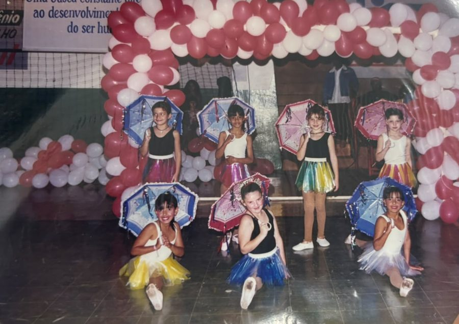
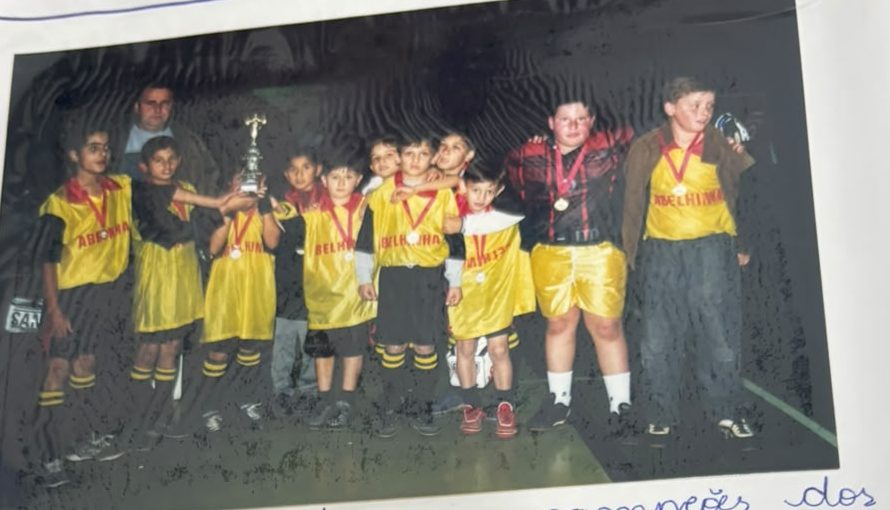

Matrículas 2027 abertas
Conhecimento e caráter, lado a lado.
Da Educação Infantil ao Ensino Médio, com uma equipe que conhece cada aluno pelo nome. Em Jandaia do Sul desde 1991.
35 anosde história em Jandaia do Sul
Da Educação Infantil ao Ensino Médio, com uma equipe que conhece cada aluno pelo nome. Em Jandaia do Sul desde 1991.
Toda a vida escolar num só lugar, com a mesma equipe acompanhando cada passo.
Rotina completa no contraturno, com acompanhamento de perto. descrição a enviar pelo colégio
Saiba mais →Aprender descobrindo, num ambiente lúdico que constrói identidade e autonomia.
Observar, comparar e analisar para aplicar o que aprende na vida prática.
Saber ser, saber fazer e saber conviver, com conteúdos integrados.
Um tema por série e orientação para a escolha profissional na 3ª série.

Cada profissional na sua área, atento às necessidades de cada aluno.
No Médio, cada série tem um tema que integra todas as disciplinas.
Grupos e entrevistas individuais na 3ª série.
Visitas a creche, asilo e galpão de reciclagem na 2ª série.
Fundado para formar alunos preparados para as mudanças do mundo.
 Alunos de 1992
Alunos de 1992
Apresentação no Ginásio de Esportes A fanfarra nas ruas da cidade
A fanfarra nas ruas da cidade
Campeões dos Jogos EscolaresGerações de alunos passaram por aqui. A próxima pode ser a do seu filho.
Matricule-seEsporte, arte, tecnologia e idiomas no contraturno.


Agende uma visita, conheça as salas, a equipe e nossa proposta de ensino.